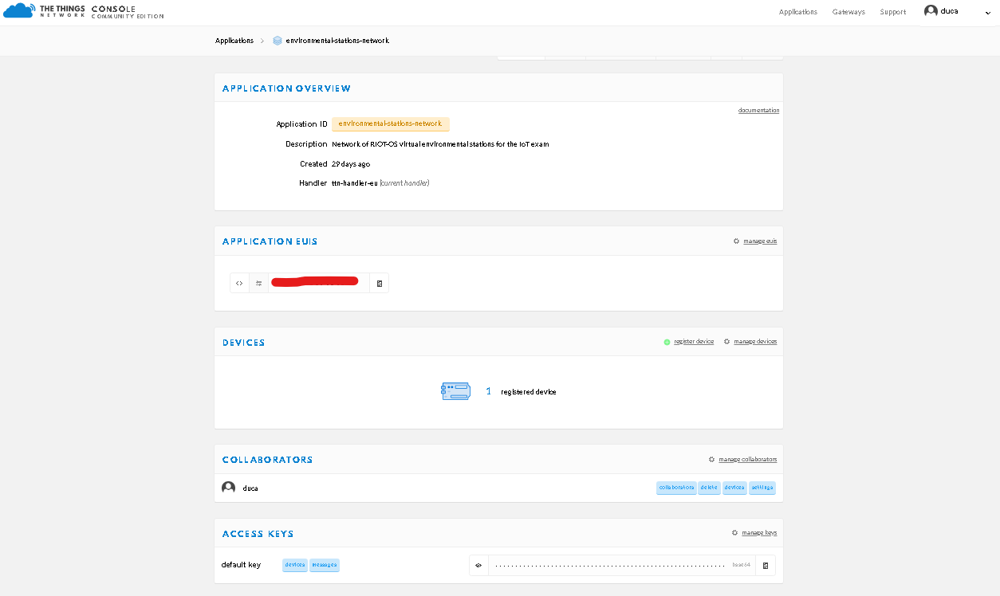

Assignment 3
RIOT-OS Virtual Environmental
Stations running on FIT/IoTLab nodes publishing values to AWS IoT using
LoRaWAN and TheThingsNetwork
This assignment is another extension
of the projects for Assignment 1 and 2, where the same dashboard and
backend components are used to collect and display data from a set of
virtual environmental stations that are built over RIOT-OS, are
deployed on the FIT/IoT Lab testbed and transmit the generated
values to AWS IoT using LoRaWAN by TheThingsNetwork and
MQTT.
The architecture implemented in this
project can be represented as follows:
More in
detail, a set of virtual environmental stations, implemented as
RIOT-OS applications and run on FIT/IoTLab St-Lrwan1 (Sx1276) nodes,
generate random values for temperature, humidity, wind
direction, wind intensity and rain height and
publishes them to a device on TheThingsNetwork using LoRaWAN. A
TTN-MQTT to MQTT bridge, implemented in Python, subscribes using MQTT to
the TheThingsNetwork MQTT broker and forwards the messages produced by
the environmental stations to AWS IoT. The messages are then forwarded
to the dashboard backend, implemented in Python, which
subscribes to the topic on which the bridge publishes the values
generated by the stations. Upon receiving the messages, which are in
JSON format, the backend stores them to a text file, which is then used
by the web server to populate the dashboard.
The dashboard and its backend are the same used in the Assignment
1 project, and as a prerequisite we need the dashboard and the
backend to be running, as well as the AWS configuration to be completed.
For information on these aspects please refer to the Assignment 1
project page.
Running the system
In this tutorial we concentrate on
running the RIOT-OS nodes and the MQTT-SN to MQTT bridge, supposing
that the AWS configuration as described in the Assignment
1 project page has been completed and the backend and web server
for the dashboard are already running.
Creating a device on
TheThingsNetwork
In order for this experiment to
work, first of all you need to register to TheThingsNetwork
and access the Console. From within the console, you have to first of
all create an application and then a device within
such application. The device will be targeted the entry point for the
messages published from the stations on TheThingsNetwork. Once the
device is created, accessing the details should return the following
information:
From this screen, take note of the
Device EUI, Application EUI and App Key values,
that will be necessary later to connect the RIOT-OS nodes to the TTN
device.
Running the TTN to MQTT bridge
This component is located in the ttn_mqtt_bridge
folder of the project. Before running the bridge, you should
put the connection information in the ttn_bridge_conf.py file.
The information needed for the connection is the value for the TTN_USERNAME_APP_ID
and TTN_PW_ACCESS_KEY, that can be retrieved
from the Application page on the TTN console, in the
Application Overview - Application ID and Access Keys sections.

Once the configuration is
completed, the bridge is ready to run. Once entering with a terminal
in the ttn_mqtt_bridge folder, it is sufficient to use
the python bridge_aws.py. The picture below shows both
the bridge initialized and waiting to receive messages from the RIOT
stations.
Running the RIOT-OS application
on FIT/IoTLab nodes
In order for this to be possible,
you need first of all to register to the FIT/IoTLab
testbed. Once this is done, it is possible to access the
testbed and create a new experiment.
Creating an experiment
Upon creating a new experiment,
the first information required are a name for the
experiment, its duration and the start time.
Once
this information is specified, then it is possible to create the
arbitrary number of nodes we may want to run. At this point, it is
important to choose the right architecture, otherwise there won't be
LoRaWAN support and our application won't run correctly.
Since
this is only an example, let's consider a single node. Once the single
node is added to the experiment, then we need to upload a firmware for
it and select it using the Add firmware button.
The
firmware can be built from scratch, by cloning the RIOT-OS repository
similarly to what is done in Assignment 2
project, or use the pre-built firmware in the
riot_station_ttn/bin/b-l072z-lrwan1/riot_station_ttn.elf.
Once
the firmware is uploaded and selected, the experiment can be started.
Configuring each node and starting
transmissions
When the experiment state is Running,
all the nodes have booted and are ready to be configured.
To
configure each node, we need to access its terminal from the Actions
section. Upon starting, the terminal shows the usual RIOT-OS
prompt and typing the help command shows the list of
the available commands.
To
configure the LoRaWAN connection with the TheThingsNetwork device, we
have to use the loramac command. The sequence of
commands is the following:
- Set the TTN Device EUI:
loramac
set deveui <deviceEui>
- Set the TTN Application EUI:
loramac
set appeui <applicationEui>
- Set the TTN App Key:
loramac
set appkey <appKey>
- Set the link data rate:
loramac
set dr 5
- Connect to the network using
Over-The-Air-Activation:
loramac join otaa
Once the loramac join otaa
returns successfully without failures, it is possible to
start the values generation and transmission by using the init_start
<station_id> command, where <station_id>
is an identifier of the station transmitted along with the values.
Upon starting the activity, if the bridge, the dashboard web server
and dashboard backend are running, the generated values should be
accessible on the dashboard.